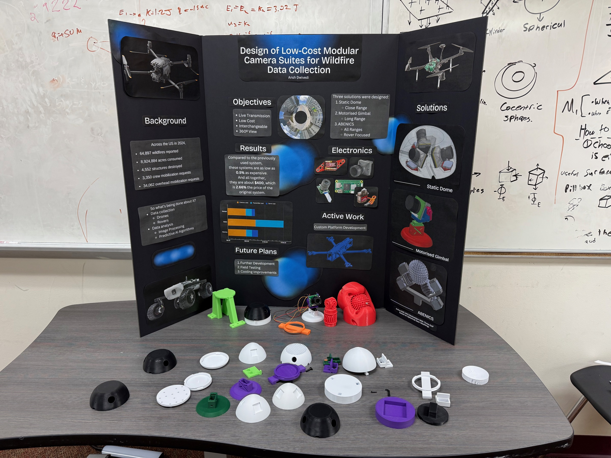
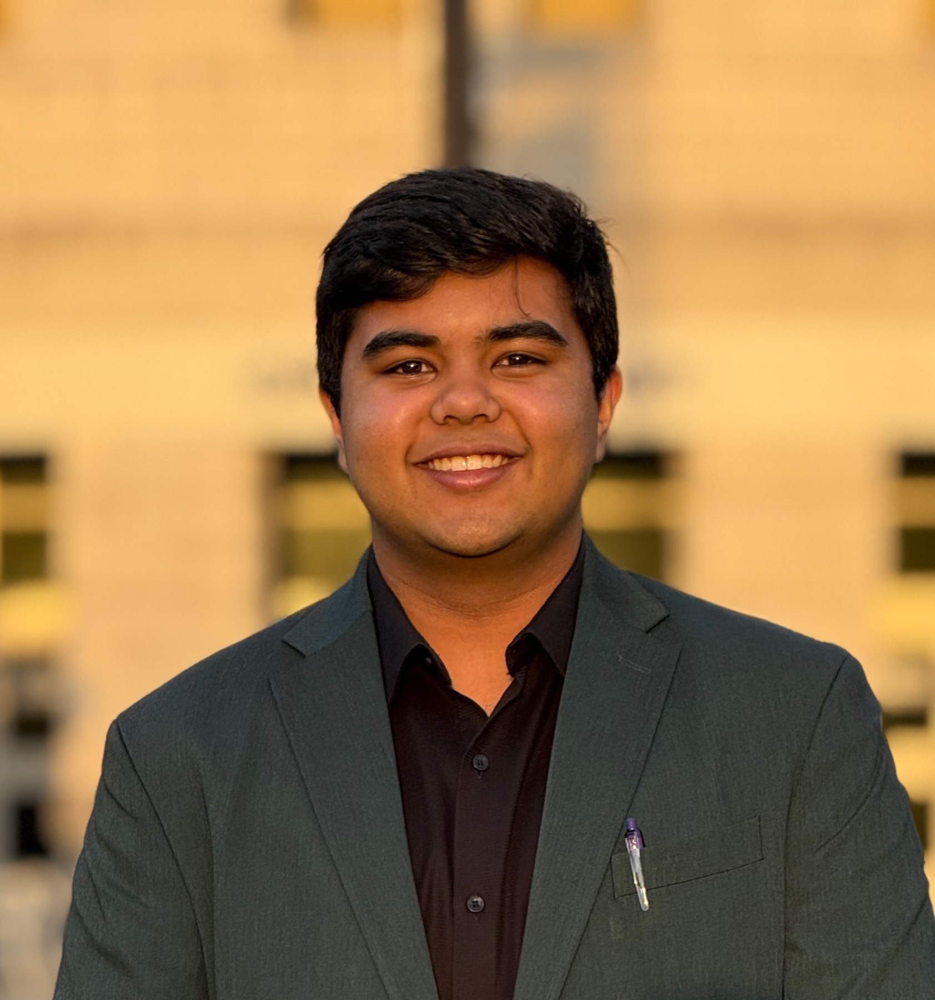

Research · 2025
Modular environmental sensor suites
A family of interchangeable camera systems designed for unmanned aerial and terrestrial vehicles used in environmental-hazard monitoring.
Read case study →Mechanical engineering · Robotics · Prototyping
I’m Ansh Dwivedi, a mechanical engineering student interested in robotics, aerospace, embedded systems, and hands-on design.

01
My work sits where mechanical design, electronics, and software meet. I enjoy taking an idea through the full process—from early sketches and CAD to fabrication, testing, and revision.
I’m especially interested in robotic systems built for difficult environments, including planetary exploration and environmental research. Outside of engineering, I’ve spent years in Scouting, STEM education, museums, and community outreach.
02
A developing collection of research, robots, and things I’ve built.

Research · 2025
A family of interchangeable camera systems designed for unmanned aerial and terrestrial vehicles used in environmental-hazard monitoring.
Read case study →Robotics · Team captain
A modular DECODE robot built to collect, select, transfer, and score artifacts—designed and competed by our 15-person team.
Read case study →Experimental design · In development
A modular wind tunnel using ultrasonic fog, custom flow conditioning, and digitally fabricated components.
Computing
Video streaming, private networking, server experiments, and embedded Linux projects across several Raspberry Pi platforms.
03
Tools I use to take projects from early design through fabrication, programming, and testing.
Design
SolidWorks, Onshape, Fusion 360, assemblies, and design for fabrication
Fabrication
FDM 3D printing, CNC machining, laser cutting, and iterative prototyping
Programming
Python, Java, C++, HTML, CSS, robotics programming, and sensor integration
Systems
Raspberry Pi, embedded systems, robotics hardware, networking, and PC/server hardware
04
2023–Present
Work experience
1 Point System
Manage the company’s U.S.-based computer and networking hardware while developing server and data-storage infrastructure supporting operations across the United States and India.
Summer 2025
Research
Clemson University SPRI
Developed modular camera suites for UAV and UGV environmental-hazard monitoring, reducing the estimated cost of 360-degree imaging hardware from approximately $15,000 to $300.
View research project →Summer 2024
Research
NASA SEES · The University of Texas at Austin
Researched low-boom supersonic flight, developed Arduino-based microphone systems, and contributed to wind-tunnel simulation and testing. The team presented its work at the 2024 American Geophysical Union Annual Meeting.
2026–Present
Leadership
FIRST Tech Challenge Team 37033
Founded and mentor a Fort Mill 4-H robotics team, guiding students through mechanical design, programming, prototyping, and competition preparation.
Summer 2025
STEM education
Club SciKidz
Led project-based science, artificial-intelligence, and LEGO robotics camps for students ages 7–13.
05
Much of my engineering experience began with teaching, repairing, organizing, and building alongside other people.
2015–Present
Scouting
Served as Senior Patrol Leader and led a 12-person crew at Philmont Scout Ranch. For my Eagle Scout project, I coordinated the construction of six benches and renovation of three staircases at the Hindu Center of Charlotte.
2024–2026
Underwater robotics
Led design, fabrication, and competition planning for an underwater ROV team that competed at the International SeaPerch Challenge in two consecutive years. Designed custom parts and trained younger members in CAD and 3D printing.
2024–2026
Technical leadership
Led computer-repair and outreach work while establishing new electronic-design and PC-building divisions for the club.
2024–2026
STEM outreach
Developed robotics and circuitry lessons as a SPARK! Robotics subject captain, supported hands-on activities at science and aviation museums, and tutored students through group and one-on-one programs.
06
Expected 2030
B.S. Mechanical Engineering · West Lafayette, Indiana
2024–2026
Hartsville, South Carolina
Selected recognition
Computer Science, Physics and Engineering Division · South Carolina Junior Academy of Science · 2026
2026
2026
07